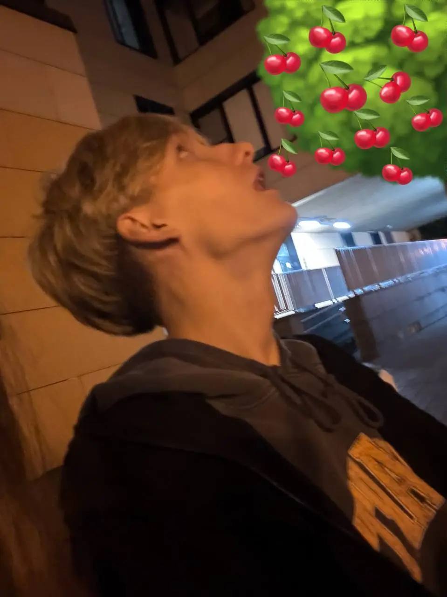

somewhere between tonight and a thought
For Georgi
I made you something.
There is something I wanted you to have.
— always
✦
Pick a star.
Some are brighter than others.
A picture I'd keep in the dark.

Two points. One sky.
Me
Georgi
One last thing.
Goodnight, Georgi.
Until we're under the same sky.